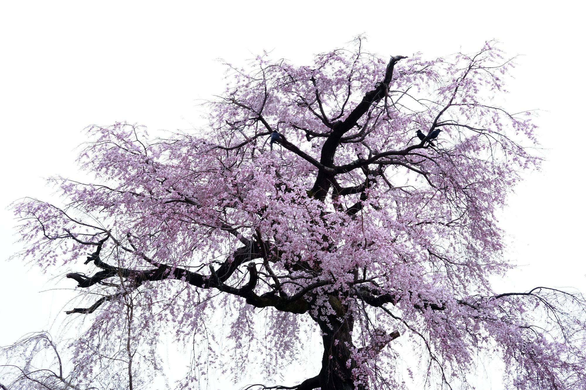

No. 二 ・ 寫真
扉頁 ・ Frontispiece

攝影是我學術生活旁邊那條安靜的副線。將近三十年來，它陪伴我注意到世界在做什麼。
我大部分的作品發生在台灣與日本的街道、山脈與海岸：黃昏時台北小巷裡緩慢的步伐、 晚秋京都清晨那種乾脆的靜謐、淡水河面上對岸大廈剛開始閃爍的光。 器材以 Fujifilm 數位機為主，偶爾配一台 Leica M6/M11 相機 ── 當一個場景太長、容不下一個方框的時候，我就會拿起 Xpan。
作品依七個系列分類 ── 街頭、春霞、青嵐、紅葉、雪明、海洋、Xpan ── 與其說是有計畫的專案，更像是被光與季節推著走的紀錄。它們合起來，是一份緩慢的觀看。
主題 ・ Series